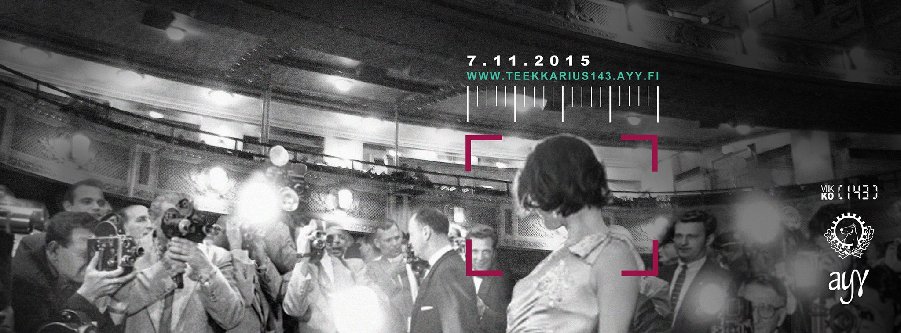
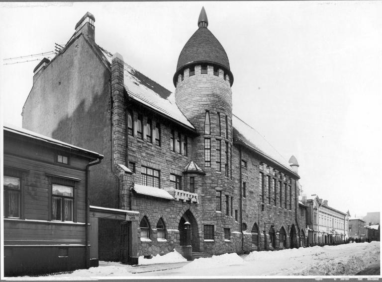
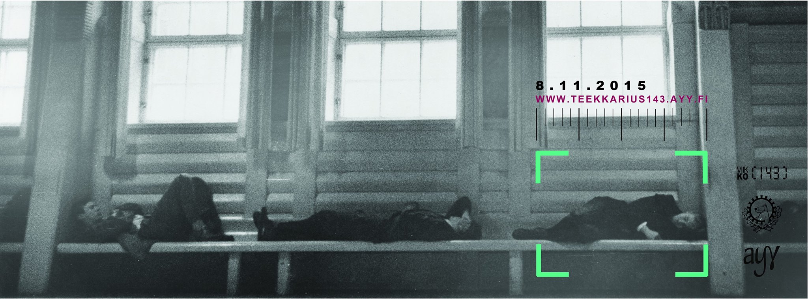

Waarin viikkotiedote 10 - Teekkariperinneviikko!
02.11.2015 fuksit / viikkotiedote / juhlasitsit / edarivaalit / teekkariperinneviikko /

Moikka taas!
Keuhkokuume jatkuu, mutta onneksi antibiootit tuntuvat auttavan. Paitsi että tänään diagnosoitiin lisäks poskiontelontulehdus. Go me!
Hyvä puoli on kyllä se, että sai koulusta ainakin viikon sairaslomaa ja deadlinet piteni viikolla. Wohoo!
Tämä marraskuun ensimmäinen viikko on teekkariperinneviikko. Koko viikko on täynnä teekkaritapahtumia, joissa pääsee mm. oppimaan koko punaisen laulukirjan melodiat ja tuntemaan Helsingin puolelta Vanhan polin lähellä sijaitsevat baarit. Viikko huipentuu teekkareiden vuosijuhlaan, teekkariperinnejuhlaan, jossa juuri opitut punaisen laulukirjan teekkarilaulut raikaavat ja teekkariperinteet nousevat kunniaan.
Mun oli tarkoitus aloittaa tällä viikolla Waarin Wartit, jossa käymällä voi ansaita "pisteet/master - Fuksiwaariin tutustumimen" -pisteen. Sairastila ei nyt ollenkaan helpota asiaa, niin se siirtyy ensi viikkoon. Laitan myöhemmin mailia tarkemmista käytännöistä! :)
Hyvää teekkariperinneviikkoa!
<3 ultsi
Sisällysluettelo
- Tärkeää
- Hallitus- ja toimihenkilöhaku
- AYY:n Edustajistovaalit
- Fuksi- ja kiltatapahtumat
- Edustajistovaalit - kahvia ja pullaa
- Fuksien juhlasitsien AVOIMET jatkot - ti 3.11.
- Lenskin Dynamon vakiovuoro - joka keskiviikko klo 20:00
- Leffailta - pe 6.11.
- Tietokilta Dominanten 40v-juhlakonserttiin - la 14.11.
- TiK vs. Inkubio Super Smash Bros. - su 15.11.
- Cännärit - ti 17.11.
- Teekkariperinneviikko
- Klubi-ilta - ma 2.11.
- Sitsilaulukilpailu - ti 3.11.
- Fuksien juhlasitsit & avoimet jatkot - ti 3.11.
- Polin Appro - ke 4.11.
- Perinnepäivä - to 5.11.
- Punaisen kirjan läpilaulanta - pe 6.11.
- Teekkariperinnejuhla & -sillis - la 7.11. & 8.11.
- AYY & Muu
- Hae mukaan Teekkarispeksiin!
- Ultrahack 2015 - pe-su 6.-8.11.
- Junction Hackathon - pe-su 6.-8.11.
- AYY tahtoo SINUT - vapaaehtoishaut ovat auki!
- Hae AYY:n vaihtostipendiä!
- Hae oppirahaa AYY:ltä!
- Lopetus
TÄRKEÄÄ
1. Hallitus- ja toimihenkilöhaku
Jee! Olipas Powerkähmyillä hauskaa ja siistiä nähdä neljän hakevan hallitukseen! Vaikka hallitusvirka välillä on iso nakki, se myös antaa todella paljon ja en ole kuullut kenenkään katuneen hallitusvirkaan lähtemistä. Suosittelen sitä ehdottomasti kaikille ! :)
Kannattaa ehdottomasti hakea johonkin virkaan - sen lisäksi, että siitä saa leiman, saa siitä myös paljon kokemusta ja pääsee toimimaan ihmisten kanssa joita tulee varmasti näkemään myöhemmässäkin vaiheessa elämää, eli toisin sanoen pääsee verkostoitumaan. Itse olen ollut aktiivisena mukana fuksivuodesta asti ja en millään tavalla ole edes yrittänyt verkostoitua tai hankkia kontakteja, mutta yhtäkkiä olen huomannut niitä kontakteja olevan todella paljon. Plussana vielä se, että virassa pääsee toteuttamaan itseään ja toimihenkilöporukassa on aina hauskaa. Helpompaa ja kivempaa on myös hakea esim. kaverin kanssa! :)
Jos tiedät jo mihin virkaan haluaisit hakea, käy ilmiantamassa itsesi osoitteessa:
http://tietokilta.fi/tapahtumat/ilmot/hallitusjatoimarit16
2. AYY:n edustajistovaalit
Nyt äänestämään! Äänesi on koko ylioppilaskunnalle tärkeä!
Muista tulla edaripullakahveille kiltikselle tiistaina klo 14-16!
MIKÄ EDUSTAJISTO? MITKÄ VAALIT?
Edustajisto on ylioppilaskunnan ylin päättävä elin – tavallaan siis ylioppilaskunnan eduskunta tai valtuusto. Tämä ”edari” koostuu puheenjohtajasta ja 45 varsinaisesta jäsenestä, ”edaattorista”, jotka Aallon opiskelijat valitsevat vaaleilla keskuudestaan. Edustajisto päättää mm. ylioppilaskunnan jäsenmaksusta, vuotuisesta budjetista ja nimittää vuosittain hallituksen johtamaan ylioppilaskunnan toimintaa. Kaikilla AYY:n jäsenillä on läsnäolo-oikeus sekä anottuna puheoikeus edustajiston kokouksissa. Uusi edustajisto valitaan vaaleilla loka-marraskuussa 2015. Uusi edustajisto aloittaa toimintansa jo tämän vuoden puolella valitsemalla hallituksen muodostajan ja hallituksen vuodelle 2016.
ÄÄNIOIKEUS
Äänioikeutettuja ovat kaikki ne AYY:n jäsenet, jotka ovat maksaneet ylioppilaskunnan jäsenmaksun perjantaihin 16.10.2015 mennessä.
ÄÄNESTÄMINEN Äänestäminen tapahtuu sähköisen vaalijärjestelmän kautta ennakkoon ma 26.10. klo 12:00. - ma 2.11. klo 24:00 tai varsinaisina vaalipäivinä ti 3.11. klo 00:00 – ke 4.11.2015 klo 16:00. Vaalijärjestelmä löytyy osoitteesta: http://vaalit.ayy.fi/
Sähköisessä vaalijärjestelmässä tunnistautuminen tapahtuu Aalto-yliopiston tunnuksilla. Mikäli Aalto-tunnuksesi eivät jostain syystä toimi, ole yhteydessä yliopiston IT Service Deskiin sähköpostitse servicedesk@aalto.fi, tai puhelimitse +358 50 513 2000. Muista käyttää ääntäsi! Ehdokaslistat, vaalikone ja lisätietoa vaaleista löytyy osoitteesta http://ayy.fi/vaalit.
Fuksi- ja kiltatapahtumat
1. Edustajistovaalit - kahvia ja pullaa - ti 3.11. klo 14-16 @ Kiltahuone
Edustajiston vaalien varsinaisten vaalipäivien kunniaksi Scisma tulee tarjoamaan kiltahuoneella pullat sekä kahviin maidot ti 3.11. klo 14-16. Tule siis juttelemaan edustajiston vaaleista, äänestämään sekä ennen kaikkea nauttimaan pullista.
AYY:n edustajiston vaalien ennakkoäänestys on ollut käynnissä 26.10. lähtien. Ennakkoon äänestäminen on mahdollista maanantaihin 2.11. klo 24.00 saakka sekä varsinaisina vaalipäivinä tiistaina 3.11. klo 00.00 alkaen keskiviikkoon 4.11 klo 16.00 asti. Lisätiedot: http://ayy.fi/vaalit/
2. Fuksien juhlasitsien AVOIMET jatkot - ti 3.11. klo 23:45 @ Smökki
Etkö päässyt fuksien juhlasitseille? Onneksi legendaaristen Fuksien juhlasitsien jatkot ovat täällä! Tule fiilistelemään glamouria ja loistoa KAIKILLE AVOIMILLE jatkoille Smökkiin Teekkariperinneviikon tiistaina! Luvassa tiskijukkien aatelinen DJ Pekka Lammi, kurkun kostuketta sekä hieman purtavaa!
Aika: 4.11.2015 klo 23:45
Paikka: Servin Mökissä
Hinta: 0€
http://tietokilta.fi/tapahtumat/850
Osa teekkariperinneviikkoa ;)
3. Lenskin Dynamon vakiovuoro - joka keskiviikko klo 20:00 @ Matlidens skola, Matinkylä 1
Lenskin Dynamo on killan oma liikuntaseura, joka pelaa matseja muita kiltoja ja yhdistyksiä vastaan niin sanotussa teekkarisarjassa Unisportilla. Matsien lisäksi LD:llä on oma vakiovuoro, jolla LD pelaa sählyä, futsalia ja korista. Kuka tahansa voi ilmoittautua mukaan kokeilemaan osoitteessa: http://lenskindynamo.nimenhuuto.com/
4. Leffailta - pe 6.11. klo 17:00 - 05:00 @ Kinopoli
Katsotaan hyviä leffoja läpi yön Audiopolin mahtavassa Kinopoli-teatterissa. Leffatarjonta paljastetaan myöhemmin.
Leffalistaus tulossa: http://tietokilta.fi/tapahtumat/826
5. Tietokilta Dominanten 40v-juhlakonserttiin - la 14.11.
Häpeilemätön promopostaus :D
Lähde mukaan Tietokillan kanssa kuulemaan huippukuoron musiikkia ja juhlistamaan samalla kuoron 40v-syntymäpäivää. Jos kiinnostaa kuulla hurrikaaneja, saatanaa tai natiivien musiikkia kuoron laulamana, tämä on se oikea juttu. Luvassa on siis todella huikeita teoksia, joita on harjoiteltu Kroatiassa korkeanpaikanleirillä ahkerasti 10 päivän ajan. Juuri samaiselta korkeanpaikanleiriltä palanneena voin kertoa, että keikka tulee todellakin olemaan kuulemisen sekä näkemisen arvoinen. Matkaa on voinut seurata hashtagilla #d40tour ja kuoron valmistautumista keikkaan voi seurata hashtagilla #dominantechoir.
Liput keikalle maksavat opiskelijalta erittäin huokeat 10 euroa. Diili on killalle spesiaali - näin halpoja lippuja keikalle et saa mistään muualta. :)
Ilmoittautuminen on sitova ja menee kiinni ensi viikon maanantaina 1.11.2015.
https://tietokilta.fi/tapahtumat/840
6. TiK vs. Inkubio Super Smash Bros. - su 15.11.
Ilmoittautuminen on auki osoitteessa http://tietokilta.fi/tapahtumat/ilmot/murskaveljekset2015!
Murskaveljekset-turnaus kokoaa yhteen Aalto-yliopiston kaksi parasta Smash Bros. -skeneä taistelemaan Otaniemen herruudesta. Tietokilta ja Inkubio kohtaavat Super Smash Bros. for Wii U:n merkeissä Otakaari 5:n tiloissa sunnuntaina 15.11 klo 14:00. Sekä kokeneemmat pelaajat että aloittelijat ovat tervetulleita pelaamaan ja kannustamaan. Tapahtumaan osallistuminen ei maksa mitään.
Mitä: TiK vs. BIO Smash Bros. -turnaus
Missä: Otakaari 5
Milloin: 15.11 klo 14:00-20:00
Hinta: 0€
Ilmo: http://tietokilta.fi/tapahtumat/ilmot/murskaveljekset2015
7. Cännärit - ti 17.11.
 CÄNNÄRIT 2015 ON JULKISTETTU!
CÄNNÄRIT 2015 ON JULKISTETTU!
Tämän vuoden teema on Arabian Yö ja juhlat pidetään tiistaina 17.11! Olen todella huikeasti yllättynyt - kiireellä jouduitte tekemään, mutta nettisivut sekä julisteet ovat olleet täyttä priimaa. Ostan lipun heti kun pystyy!
Muistakaa, että vielä pääsee mukaan järjestämään Cännäreitä, jos ei mukana vielä ole. Se on yksi parhaista jutuista lähteä mukaan fuksivuonna sillä järjestäjäporukasta kehkeytyy tiivis kaveripiiri, jonka kanssa on hauskaa opiskella ja viettää seuraavat vuodet yliopistolla. Lisätietoja saa ottamalla yhteyttä pääjärjestäjään, Ilmari Tarpilaan. :)
Teekkariperinneviikko

Yllä kuvassa teekkareiden entinen yhteisötila, Vanha Poli
Teekkariperinneviikkoa juhlitaan entisen TKY:n vuosijuhlaviikon jälkimainingeissa marraskuun alussa. Tänä vuonna ohjelmaan kuuluu laulamista ja laulukilpailua, approilua, tarinoita menneiltä vuosilta, sitsejä, hämyistä klubitunnelmaa sekä tietenkin viikon huipentava Teekkariperinnejuhla räiskyvine silliksineen! Mukaan humuun ovat tervetulleita kaikki fuksit, teekkarit, teekkarinmieliset ja muut kiinnostuneet!
Koko Teekkariperinneviikon ohjelman löydät myös osoitteesta http://www.teekkarius143.ayy.fi.
1. Klubi-ilta - ma 2.11. klo 18:00 @ Smökki
MITÄ? - Klubi-ilta - Tupakkaa, whiskyä ja upeaa ohjelmaa.
MISSÄ? - Smökki (Jämeräntaival 4)
MILLOIN? - 2. Marraskuuta klo 18.00
MITÄ MAKSAA? - 8€
MITÄ YLLE? - Smokki / Cocktail
FB: https://www.facebook.com/events/900879653335609/
Teekkariperinneviikko käynnistyy tyylikkäästi maanantaina, kun Smökin valtaa rennon aistikas klubitunnelma. Perinteeksi muodostunut Klubi-ilta, Otaniemen savoir-vivre -seurapiiritapahtumien huipentuma, kutkuttaa juhlakansan aisteja miellyttävin jazz- ja funk-sävelin, sekä vetoaa huolettoman hienostuneella tunnelmallaan sielunesteettisiin sopukoihin. Baari on varustautunut miellyttämään vaativampaakin makua, ja virvokkeita sekä ruokia tarjoillaan luonnollisesti suoraan pöytiin. Juhlakansaa viihdyttää illan aikana GAYY sykähdyttävällä burleskishow'llaan. Tämän lisäksi lämmitetyssä ulkoteltassa tarjoutuu mahdollisuus nautiskella kuubahlaisista aromeista sikaritarjonnante muodossa.
Tapahtuman järjestävät yhteistyössä Otaniemen Jalostusseura, Akateeminen Herramiesklubi ja GAYY.
2. Sitsilaulukilpailu - ti 3.11. klo 18:00 @ OK
Huom! Ilmo mennyt kiinni 1.11.
Sitsilaulukilpailu tulee jälleen - oletko valmis?
Kaikkia kilpailuun osallistuvia kappaleita saa tulla esittämään Laulukilpailusitseille 3.11.2015 OK 20:een, ja kaikki ovat tervetulleita sitsaamaan kappaleita arvioivan tuomariston kanssa.
Kilpailussa on kaksi sarjaa, joihin voi osallistua 4.11.2014 jälkeen yksin tai ryhmässä sanoitetuilla kappaleilla: 1. Täysin uudet aiemmin esittämättömät kappaleet 2. Tänä vuonna sanoitetut jo aiemmin sitseillä tai muissa laulutilaisuuksissa esitetyt kappaleet
Kahden kilpailusarjan lisäksi jaossa on Sibelius 150 –juhlavuoden kunniaksi erityispalkinto tuomariston parhaaksi katsomalle teokselle, joka liittyy säveleltään tai sanoiltaan jotenkin Jean Sibeliukseen tai hänen teoksiinsa. Kaivakaa siis sinfoniat, sävelrunot, konsertot ja muut tutut (tai vähemmän tutut) teokset esiin ja päästäkää luovuutenne valloilleen!
Molempien kilpailusarjojen voittajat saavat maineen ja kunnian lisäksi sanoittamansa kappaleen Teekkariperinnejuhlan lauluvihkoon (ja se lauletaan juhlissa). Lisäksi voittajille on luvassa yllätyspalkinto!
Kilpailuun osallistuvat kappaleet on lähetettävä osoitteeseen lutku15@list.ayy.fi su 1.11. klo 23.55 mennessä. Laita viestiin nimesi (tai kaikkien tekijöiden nimet jos useampia), yhteystietosi, kumpaan sarjaan osallistut, sekä tietenkin biisin nimi, sävel ja sanat.
Toivomme, että mahdollisimman moni laulukilpailuun osallistuva pääsee paikalle sitsaamaan kanssamme ja esittämään tuomaristolle oman kappaleensa sitsien aikana. Laulukilpailuun voi toki osallistua myös esittämättä kappaletta, tai pistäytyä sitseillä pelkästään esittämässä kilpailukappaleensa (ota tässä tapauksessa yhteyttä järjestäjiin).
MITÄ: Laulukilpailusitsit
MISSÄ: Otakaari 20
MILLOIN: Ti 3.11. klo 18
KUKA: Laulukilpailuun osallistuvat ja muut kiinnostuneet!
3. Fuksien juhlasitsit & avoimet jatkot - ti 3.11. klo 18:00 - 02:00 @ Smökki
Vuoden upeimmat pöytäjuhlat järjestetään Servin Mökissä Teekkariperinneviikon tiistaina. Fuksien juhlasitseillä luvassa on vanhanajan glamouria ja ennenäkemätöntä loistoa.
Juhlat alkavat cocktail-tilaisuudella Polyteekkarimuseolla, josta siirrytään Servin Mökkiin varsinaiseen iltajuhlaan. Sitsit on tarkoitettu ainoastaan fukseille ja moni vanhempi tieteenharjoittaja muisteleekin kaiholla sitsien suussa sulavaa ruokaa ja inspiroivaa ohjelmaa. Lippuja myydään vain ja ainoastaan maanantaina 26.10. klo 8:00 ja liput tulevat olemaan tänäkin vuonna äärimmäisen haluttuja.
Aika: 3.11.2015 klo 18:00 (sitsit 19:00)
Paikka: Cocktail-tilaisuus Polyteekkarimuseolla & Sitsit Servin Mökissä
Hinta: 25 € / 20 €
Pukukoodi: Tumma puku / cocktail
AVOIMET JATKOT
Legendaaristen Fuksien juhlasitsien jatkot ovat täällä! Tule fiilistelemään glamouria ja loistoa KAIKILLE AVOIMILLE jatkoille Smökkiin Teekkariperinneviikon tiistaina! Luvassa tiskijukkien aatelinen DJ Pekka Lammi, kurkun kostuketta sekä hieman purtavaa!
Aika: 4.11.2015 klo 23:45
Paikka: Servin Mökissä
Hinta: 0€
4. Polin Appro - ke 4.11. klo 17:00 @ Helsinki
Polin appro valtaa jälleen Helsingin keskustan kadut ja kuppilat Teekkariperinneviikolla ke 4.11., kun haalarikansa pääsee taistelemaan Hollywoodin kirkkaimman tähden tittelistä! Tämän vuoden Polin appron teemana on Hollywood.
Approjen tapaan osallistujat keräävät suoritusmerkintöjä käymällä yhteistyöbaareissa. Illan aikana kerättyjen suoritusmerkintöjen mukaan saa jatkopaikalla palkinnoksi haalarimerkin. Approilijat pääsevät nauttimaan Hollywoodin glamourista tavallisten rastien lisäksi jännittävillä erikoisrasteilla. Laita siis parhaasi, eli haalarisi, päälle ja lähde mukaan seikkailulle, jossa Helsingin keskusta muuttuu yhden illan ajaksi Hollywoodiksi! Baarikiertelyn jälkeen juhlat jatkuvat Club Capitalissa Sosiaalifobian ja Siman tahtiin!
Muista approista poiketen suorituksiin ei vaadita aikaisempaa osallistumista, eli minkä tahansa suoritustason voi saavuttaa jo ensimmäisellä osallistumiskerralla. Suoritustasot ovat bronze (7), silver (11), gold (15).
Tapahtuma alkaa portaittain kello 16.00 lähtien Ugglasta (Annankatu 10), jonka jälkeen kiertelyaikaa on 4 tuntia. Yhteiset jatkot pamahtavat käyntiin kello 21 alkaen Club Capitalissa (Fredrikinkatu 51).
Lisää tietoa tapahtuman nettisivuilla: http://www.polinappro.fi ja http://www.teekkarius143.ayy.fi
Tapahtuman järjestää Aalto-yliopiston ylioppilaskunnan Isännistö ja Emännistö. Mukana menossa myös Julkku ja Jäynä.
5. Perinnepäivä - to 5.11. klo 15:00 - 18:00 @ Kandidaattikeskus, E-sali
FB: https://www.facebook.com/events/1510641099257136/
MITÄ: Perinnepäivä eli tarinoita teekkarikulttuurista vuosien varrelta
MISSÄ: Kanditalon E-sali
MILLOIN: Torstaina 5.11. klo 15-18
Mitä olisikaan teekkariperinneviikko ilman perinteitä! Perinnepäivänä 5.11. järjestetään ainutlaatuinen tilaisuus tutustua teekkariperinteiden historiaan, kun Kanditalon E-saliin saapuu joukko vanhempia tieteenharjottajia kertomaan teekkarikulttuurista aina 60-luvulta asti. Tilaisuus alkaa puhujien lyhyillä esitelmillä, jotka käsittelevät teekkarikulttuurin eri ilmentymismuotoja ja kohelluksia menneiltä ajoilta ja huipentuu yhteiseen keskusteluun, jossa myös yleisön sana on vapaa. Tämän jälkeen on vielä yhteinen ruokailutilaisuus puhujien kanssa, jossa saa syödä navan täyteen aivan ilmaiseksi!
Tapahtuman aikataulu on seuraava:
15:00 Esitelmä 1
15:15 Esitelmä 2
15:30 Esitelmä 3
15:45 Kahvitauko
16:00 Esitelmä 4
16:15 Esitelmä 5
16:30 Esitelmä 6
16:45 Kahvitauko
17:00 Paneelikeskustelu puhujien kanssa ja ruokailu
Aiheet julkaistaan pian, seuraa siis tiiviisti tapahtumaa ja valmistaudu upeaan elämykseen.
Voit saapua kuuntelemaan esityksiä milloin haluat, katsothan kuitenkin, ettet keskeytä jo käynnissä olevaa tilaisuutta. Lisäksi ruokaa on varattu ainoastaan viimeiseen keskustelutilaisuuteen osallistuville.
Huom. Tapahtuman puheenvuorot pidetään suomeksi.
6. Punaisen kirjan läpilaulanta - pe 6.11. klo 18:00-23:59 @ Rantasauna
Oletko ikinä pohtinut, kuinka jokin laulu punaisessa laulukirjassa oikein menee - mikä itse asiassa on jonkin kappaleen melodia? Entä syntyhistoria? Punaisen läpilaulanta kokoaa paikalle laulutietäjiä sekä nykyisistä että entisistä teekkariaktiiveista perinneviikon perjantaina - tule ja koe koko laulukirja!
Tapahtumaan on ilmainen sisäänpääsy ja paikan päällä on myynnissä punaisia laulukirjoja ja virvokkeita. Tämän lisäksi sauna on lämmin äänihuulten lepyttämiseksi loppuillasta.
7. Teekkariperinnejuhla & -sillis - la 7.11. & 8.11.
Koko teekkariperinneviikko huipentuu teekkarijuhlista arvokkaimpaan, Teekkariperinnejuhlaan. Tässä siitä hieman lisätietoa:
Teekkariperinnejuhla
Astu punaiselle matolle. Tunne keveys, hehku. Jännitä onko vierustoverisi seuraava arwoisa. Nosta malja. Hurmaannu. Tämä hetki. Haluatko kokea sen?
Teekkariuden saavuttaessa 143 vuotta on aika vaihtaa toimikuntahuppari tai villaneule frakkiin tai iltapukuun ja saapua viettämään huikeaa iltaa muiden teekkarien ja teekkarinmielisten kanssa! Teekkariperinnejuhlaa juhlitaan Teekkariperinneviikolla lauantaina 7.11. Koskenrannassa kello 18 alkaen.
Hengähdä. Mikä ilta. Onneksi on vielä Teekkarisillis.
Teekkarisillis
Painaako vielä eilisen loiste ja glamour? Kuuletko sykkeen Otaniemen sydämestä? Se kutsuu sinua. Valitsetko tänään pallomeren vai pomppulinnan?
Luvassa:
DJ Jät Ski
Herrat ja Hulttiot
DJ Rony Rex
Teekkarisillis, Otaniemen sillisten kuningas, lopettaa Teekkariperinneviikon sunnuntaina 8.11. Servin Mökissä kello 12 alkaen. Sillis tarjoilee kattauksen, josta et voi kieltäytyä. Tunnelma on taattu ja meininki huikea. Ensimmäisellä bingo-kierroksella jaetaan ilmaiset skumpat.
Silliksen hinta on 15 euroa. Koko Teekkariperinneviikon ohjelman ja linkin iolmoittautumiseen löydät osoitteesta http://www.teekkarius143.ayy.fi.
AYY & Muu
1. Hae mukaan Teekkarispeksiin!
Jos olet aina haaveillut pääseväsi esiintymään satojen eteen, tai haluaisit nähdä ja kuulla omaa kädenjälkeäsi Suomen suurimmassa opiskelijamusikaalissa, nyt on tilaisuutesi tullut. Teekkarispeksin vuoden 2016 produktion haut lavalle ja musiikkitiimeihin ovat nimittäin nyt käynnistyneet! Näyttelijäksi voi tulla valituksi casting-tilaisuuksiin osallistumalla, produktion tanssitiimi valitaan tanssikokeiden perusteella, ja bändiin voi pyrkiä bändijameihin osallistumalla. Lisäksi sanoittajaksi ja maskeeraajaksi voi hakeutua kyseisten osa-alueiden pomoille (vastuuhenkilöille) ilmoittautumalla.
Tässä vielä aikataulua:
Castingit 15.11. ja 16.11. (ilmoittautumisen DL 8.11.)
Bändijamit 10.11. ja 11.11. (ilmoittautumisen DL 1.11.)
Tanssikoe 14.11. (ilmoittautumisen DL 7.11.) + Koreografirekry (hakemusten DL 4.11.
Sanoitushaku aukeaa 1.11.
Jos kiinnostuit, tarkemmat kuvaukset ja ilmoittautumisohjeet löydät osoitteesta http://www.teekkarispeksi.fi/speksi/blogi/hae-mukaan-vuoden-2016-teekkarispeksiin
2. UltraHack 2015 - pe-su 6.-8.11.
Ultrahack 2015 - part of the biggest hackathon in Europe - is an ultra long runway for the development of your ideas and software.
Ultrahack has top notch industry players to provide never-before-published APIs and tools.
You can join with your pre-existing software and get expert evaluation and coaching for that! Or you can start from the scratch in during pre-game period 1.9.-30.10. or in 48H hackathon 6.-8.11.
Ultrahack has a multitude of various prizes, rewards and traveling grants. When you join the Ultrahack, you have good chances of winning in an extraordinary hackathon experience!
3. Junction Hackathon - pe-su 6.-8.11. @ Kattilahalli, Suvilahti
Junction on 48 tunnin hackathon, joka tuo yhteen 500 koodaajaa ja designeria pohjoismaita. Osallistujat kilpailevat tiimeissä eri aihealueisiin keskittyviin träckeihin. Tavoitteena on ratkaista arkielämän ongelmia tai rakentaa siistejä ohjelmia yhdistämällä paikalla esillä olevia kuumimpia rajapintoja ja laitteita. Hackathon järjestetään kattilahallissa Suvilahdessa 6.-8.11. ja osallistuminen on maksutonta. Tapahtuman yhteistyökumppaneita ovat mm. Klarna, Uber, Shopify, If, Rails, Girls, Futurice, Reaktor ja Finnair.
Tapahtumaa järjestää Aalto Entrepreneurship Society.
Rekisteröidy osoitteessa
http://www.hackjunction.com
4. AYY tahtoo SINUT - tutustu vapaaehtoistehtäviin Rekryillassa 10.11!
Bileitä, etujen puolustamista, perinteitä, yhteistyöyrityksiä - AYY:n vapaaehtoishaut ovat nyt auki osoitteessa http://ayy.fi/stop, mutta mitä kaikkea ylioppilaskunnassamme voikaan tehdä? Tule kuulemaan vapaaehtoisten omista kokemuksista AYY:llä tiistaina 10.11. Elisa Olohuoneessa klo 17! Luvassa rentoa keskustelua ja mahdollisuus kysellä erilaisista tehtävistä pikkunaposteltavan ohessa. We want YOU!
http://www.facebook.com/events/1610603845871903/
5. Hae AYY:n vaihtostipendiä!
AYY jakaa syksyllä vaihtostipendejä tukeakseen vähävaraisten, aktiivisten yhteisön jäsenten kansainvälistymismahdollisuuksia.
Stipendejä voi hakea 15.11. klo 23.59 asti.
Lisätietoja stipendeistä ja hakulomakkeen löydät täältä: http://ayy.fi/jasenille/palvelut/stipendit/
6. Hae oppirahaa AYY:ltä!
Aalto-yliopisto ja sen ylioppilaskunta myöntävät yhteistyössä oppirahaa päräyttäville opiskelua ja oppimista edistäville projekteille. Voit hakea rahaa yksin, yhdessä tai yhdistyksenä – kunhan idea on hyvä me haluamme auttaa sen toteuttamisessa!
Haku on jatkuva ja hakemukset käsitellään kuukausittain, tarkoitus on että hyvä ideasi ei pääse happanemaan vaan pääset heti toteuttamisen makuun. Hakemukset käsittelee ja hyväksyy Aalto-yliopiston ylioppilaskunnan koulutuspoliittinen sektori ja Aalto-yliopiston opetuksesta vastaava vararehtori.
https://lomake.ayy.fi/koulutuspolitiikka/2015/04/15/oppirahaa-kansalle/
Lopetus

Ylläolevan kuvan tavoin painun nukkumaan tautia pois. Hyvää teekkariperinneviikkoa kaikille! :)
<3 ultsi